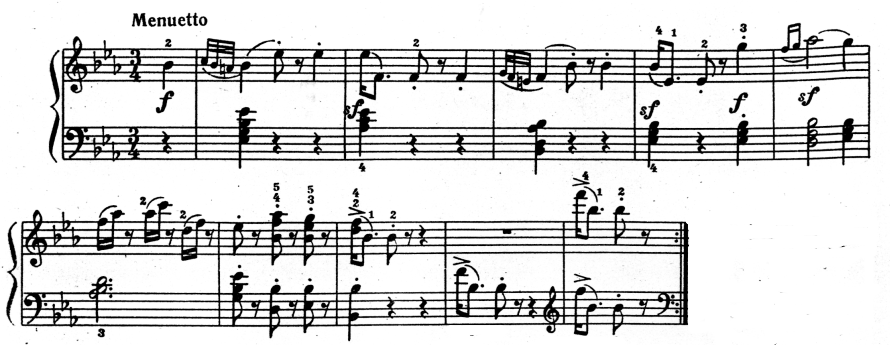

Симфоническое творчество Гайдна
Гайдном написано 104 симфонии, первая из которых была создана в 1759 году для капеллы графа Морцина, а последняя – в 1795 году в связи с лондонскими гастролями.
Жанр симфонии в творчестве Гайдна эволюционировал от образцов, близких бытовой и камерной музыке, к «Парижским» и «Лондонским» симфониям, в которых утвердились классические закономерности жанра, характерные типы тематизма и приемы развития.
Богатый и сложный мир гайдновских симфоний обладает замечательными качествами открытости, общительности, направленности на слушателя. Основной источник их музыкального языка – жанрово-бытовые, песенные и танцевальные интонации, иногда непосредственно заимствованные из фольклорных источников. Включенные в сложный процесс симфонического развития, они обнаруживают новые образные, динамические возможности.
В зрелых симфониях Гайдна устанавливается классический состав оркестра, включающий все группы инструментов (струнные, деревянные и медные духовые, ударные).
Почти все гайдновские симфонии непрограммны, они не имеют какого-то определенного сюжета. Исключение составляют три ранних симфонии, названные самим композитором «Утро», «Полдень», «Вечер» (№№ 6, 7, 8). Все другие названия, данные симфониям Гайдна и закрепившиеся в практике, принадлежат слушателям. Некоторые из них передают общий характер произведения («Прощальная» – № 45), другие отражают особенности оркестровки («С сигналом рога» – № 31, «С тремоло литавр» – № 103) или акцентируют какой-то запоминающийся образ («Медведь» – № 82, «Курица» – № 83, «Часы» – № 101). Иногда названия симфоний связаны с обстоятельствами их создания или исполнения («Оксфордская» – № 92, шесть «Парижских» симфоний 80-х годов). Однако сам композитор никогда не комментировал образное содержание своей инструментальной музыки.
Симфония у Гайдна обретает смысл обобщенной «картины мира», в которой разные стороны жизни – серьезные, драматические, лирико-философские, юмористические – приведены к единству и равновесию.
Гайдновский симфонический цикл, как правило, содержит типичные четыре части (allegro, andante, менуэт и финал), хотя порою композитор увеличивал количество частей до пяти (симфонии «Полдень», «Прощальная») или ограничивался тремя (в самых первых симфониях). Иногда ради достижения особого настроения он изменял обычную последовательность частей (симфония № 49 начинается скорбным adagio).
Законченные, идеально уравновешенные и логически выстроенные формы частей симфонического цикла (сонатная, вариационная, рондо и др.) включают элементы импровизационности, замечательные отклонения и неожиданности обостряют интерес к самому процессу развития мысли, всегда увлекательному, наполненному событиями. Излюбленные гайдновские «сюрпризы» и «розыгрыши» помогали восприятию самого серьезного жанра инструментальной музыки.
Среди многочисленных симфоний, созданных Гайдном для оркестра князя Николая I Эстергази, выделяется группа минорных симфоний конца 60-х – начала 70-х годов. Это симфонии № 39 (g-moll), № 44 («Траурная», е-moll), № 45 («Прощальная», fis-moll) и № 49 (f-moll, «La Passione, то есть связанная с темой страдания и смерти Иисуса Христа).
«Лондонские» симфонии
Высшим достижением гайдновского симфонизма считаются его 12 «Лондонских» симфоний.
«Лондонские» симфонии (№№ 93–104) были написаны Гайдном в Англии, во время двух гастрольных поездок, устроенных известным скрипачом и концертным предпринимателем Саломоном. Первые шесть появились в 1791–92 годах, еще шесть – в 1794–95 годах, т.е. уже после смерти Моцарта. Именно в «Лондонских» симфониях композитор создал свой, не похожий ни на кого из его современников, устойчивый тип симфонии. Эта типичная для Гайдна модель симфонии отличается:
- господством мажорных тональностей (минорная среди «Лондонских» лишь одна –№ 95, c-moll, однако ее финал написан в C-dur);
- опорой на народно–жанровый тематизм, причем часто – на подлинные народные мелодии австрийского, немецкого, чешского, венгерского, сербского происхождения. В XVIII веке такой тематизм был очень необычен для крупных инструментальных жанров, звучал очень свежо и оригинально;
- общим жизнерадостным характером музыки. Для Гайдна вообще мало свойственна героика и трагедийность, но в данном случае он наверняка учитывал условия исполнения «Лондонских» симфоний. Перед композитором была уже не камерная аудитория, состоявшая из членов семьи Эстергази и их гостей, и давно знавшая стиль его музыки. Гайдн должен был завоевать и покорить неискушенного лондонского слушателя, приходившего на концерты буквально «с улицы». Слишком сложные образы могли отпугнуть широкую публику. Композитор постарался сделать лирические части «Лондонских» симфоний как можно более пленительными и не очень затянутыми, для каждой из них он нашел какую-нибудь интересную деталь – «изюминку». Это сразу же было оценено слушателями, и некоторые из симфоний получили названия по своеобразным эффектам именно в медленных частях.[1]
Все «Лондонские» симфонии открываются медленными вступлениями (кроме минорной 95-й). Вступления выполняют многообразные функции:
- Они создают сильный контраст по отношению ко всему остальному материалу I части, поэтому в дальнейшем ее развитии композитор, как правило, обходится без сопоставления разнохарактерных тем;
- Вступление всегда начинается с громкого утверждения тоники (пусть даже одноименной, минорной – как, например, в симфонии № 104) – а это значит, что главная партия сонатного allegro может начаться тихонько, исподволь и даже сразу отклониться в другую тональность, что создает устремленность музыки вперед, к предстоящим кульминациям;
- Иногда материал вступления становится одним из важных участников тематической драматургии. Так, в симфонии № 103 (Es-dur, «С тремоло литавр») мажорная, но сумрачная тема вступления появляется и в разработке, и в коде I части, причем в разработке она становится неузнаваемой, сменив темп, ритм и фактуру.
Вступление к первой части симфонии №103:
Сонатная форма в «Лондонских симфониях» весьма своеобразна. Гайдн создал такой тип сонатного allegro, в котором главная и побочная темы не контрастны друг другу и нередко вообще строятся на одном и том же материале. Однотемны, например, экспозиции симфоний № 98, 99, 100, 104. В I части симфонии № 104 (D-dur) песенно-танцевальная тема главной партии изложена одними струнными на p, лишь в заключительном кадансе вступает весь оркестр, неся с собой задорное веселье (такой прием стал художественной нормой в «Лондонских» симфониях). В разделе побочной партии звучит та же тема, но только в доминантовой тональности, причем в ансамбле со струнными теперь поочередно выступают деревянные-духовые.
В экспозициях I частей симфоний № 93, 102, 103 побочные темы строятся на самостоятельном, но не контрастном по отношению к главным темам материале. Так, например, в I части симфонии № 103 обе темы экспозиции задорны, жизнерадостны, в жанровом отношении близки австрийскому лендлеру, обе мажорны: главная – в основной тональности, побочная – в доминантовой.
Главная партия:
Побочная партия:
В сонатных разработках «Лондонских» симфоний господствует мотивный тип развития. Это обусловлено танцевальным характером тем, в которых огромную роль играет ритм (танцевальные темы легче членятся на отдельные мотивы, чем кантиленные). Развитию подвергается наиболее яркий и запоминающийся мотив темы, причем не обязательно начальный. Например, в разработке I части симфонии № 104 разрабатывается мотив 3-4 тактов главной темы, как наиболее способный к изменениям: он звучит то вопросительно и неуверенно, то грозно и настойчиво.
Развивая тематический материал, Гайдн проявляет неистощимую изобретательность. Он использует яркие тональные сопоставления, регистровые и оркестровые контрасты, полифонические приемы. Темы нередко сильно переосмысливаются, драматизируются, хотя больших конфликтов не возникает. Строго соблюдаются пропорции разделов – разработки чаще всего равны 2/3 экспозиций.
Излюбленной у Гайдна формой медленных частей являются двойные вариации, которые иногда так и называют «гайдновскими». Чередуясь между собой, варьируются две темы (обычно в одноименных тональностях), различные по звучности и фактуре, но интонационно близкие и потому мирно друг с другом соседствующие. В такой форме написано, например, известнейшее Andante из 103 симфонии: обе его темы выдержаны в народном (хорватском) колорите, в обеих обыгрывается восходящее движение от T к D, пунктирный ритм, присутствует альтерация IV ступень лада; однако минорная первая тема (струнные) носит сосредоточенно-повествовательный характер, а мажорная вторая (весь оркестр) – маршевый и энергичный.
Первая тема:
Вторая тема:
Встречаются в «Лондонских» симфониях и обычные вариации, как например в Andante из 94 симфонии. Здесь варьируется тема, отличающаяся особой простотой. Эта нарочитая простота заставляете течение музыки внезапно прерывает оглушительный удар всего оркестра с литаврами (это и есть тот «сюрприз», с которым связано название симфонии).
Наряду с вариационной, композитор нередко использует в медленных частях и сложную трехчастную форму, как, например, в симфонии № 104. Все разделы трехчастной формы содержат здесь что-то новое по отношению к начальной музыкальной мысли.
По традиции медленные части сонатно-симфонических циклов – это центр лирики и певучего мелодизма. Однако гайдновская лирика в симфониях явно тяготеет к жанровости. Многие темы медленных частей опираются на песенную или танцевальную основу, обнаруживая, например, черты менуэта. Показательно, что из всех «Лондонских» симфоний ремарка «певуче» присутствует только в Largo 93 симфонии.
Менуэт – единственная часть в симфониях Гайдна, где в обязательном порядке присутствует внутренний контраст. Гайдновские менуэты стали эталоном жизненной энергии и оптимизма (можно сказать, что индивидуальность композитора – черты его личного характера – проявились здесь наиболее непосредственно). Чаще всего это живые сценки народного быта. Преобладают менуэты, несущие традиции крестьянской танцевальной музыки, в частности, австрийского лендлера (как, например, в симфонии № 104). Более галантный менуэт в «Военной» симфонии, причудливо-скерцозный (благодаря острой ритмике) – в симфонии № 103.
Менуэт симфонии №103:

Вообще, подчеркнутая ритмическая острота во многих гайдновских менуэтах настолько видоизменяет их жанровый облик, что, по-существу, прямо подводит к бетховенским скерцо.
Форма менуэта – всегда сложная 3-частная da capo с контрастным трио в центре. Трио обычно мягко контрастирует с основной темой менуэта. Очень часто здесь действительно играют лишь три инструмента (или, во всяком случае, фактура становится более легкой и прозрачной).
Финалы «Лондонских» симфоний все без исключения мажорны и радостны. Здесь в полной мере проявилась предрасположенность Гайдна к стихии народного танца. Очень часто музыка финалов вырастает из подлинно народных тем, как в симфонии № 104. Ее финал основан на чешской народной мелодии, которая изложена таким образом, что ее народное происхождение сразу очевидно – на фоне тонического органного пункта, подражающего волынке.
Финал поддерживает симметрию в композиции цикла: он возвращает к быстрому темпу I части, к действенной активности, к жизнерадостному настроению. Форма финала – рондо или рондо-соната (в симфонии № 103) или (реже) – сонатная (в симфонии № 104). В любом случае она лишена каких-либо конфликтных моментов и проносится, подобно калейдоскопу пестрых праздничных образов.
Если в самых ранних симфониях Гайдна духовая группа состояла лишь из двух гобоев и двух валторн, то в поздних, лондонских, систематически встречается полный парный состав деревянных духовых (включая кларнеты), и в ряде случаев также трубы и литавры.
[1] Симфония № 100, G-dur получила название «Военной»: в ее Allegretto публика угадывала чинный ход гвардейского парада, прерываемого сигналом военной трубы. В № 101, D-dur тема Andante разворачивается на фоне механического «тиканья» двух фаготов и pizzicato струнных, в связи с чем симфония была названа «Часы».